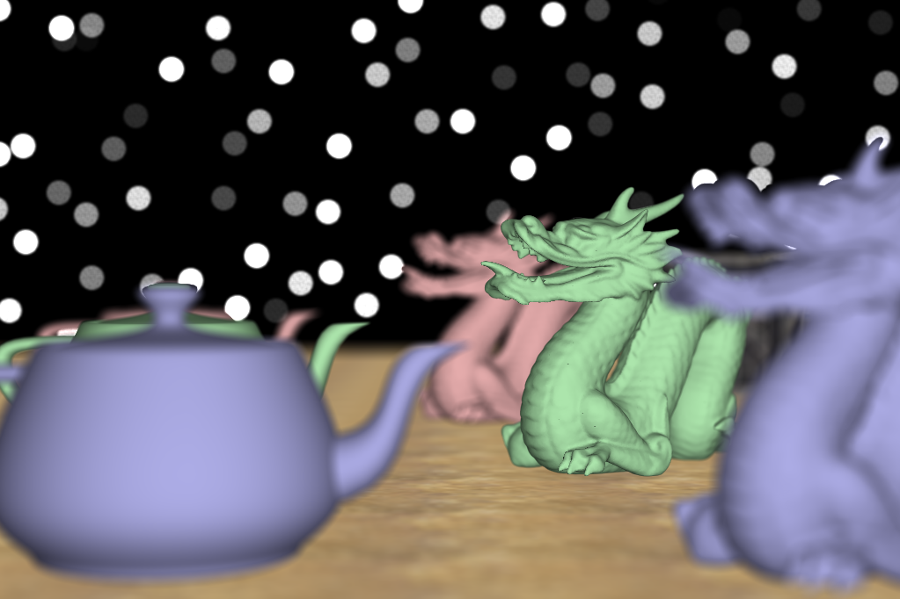
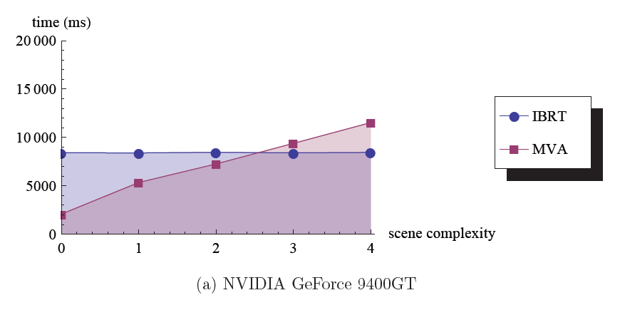
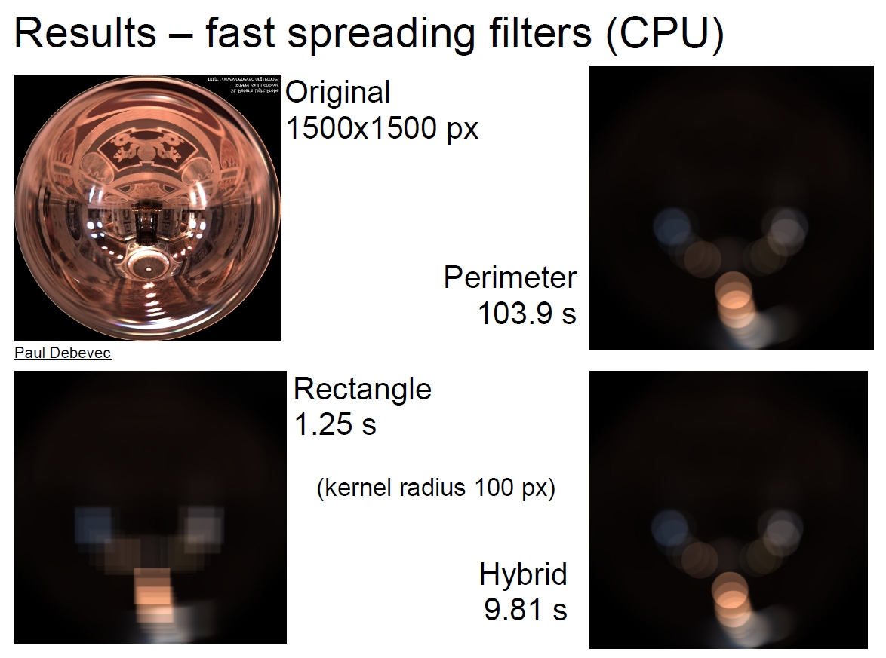
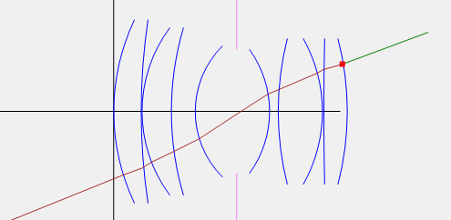

One of the areas of realistic image synthesis is in modeling cameras. The goal is to provide a visual cue with depth of field and to achieve a photographic look with bokeh (out-of-focus highlights), tilt-shift and optical aberrations of real-world lenses. We provide a comparison of existing methods and fundamental approaches for depth-of-field rendering, including the recent methods, such as the image-based ray tracing. We propose a novel representation of ray transfer within complex lenses suitable for optimizing the ray generation. The open problems in this research area are presented along with sketches of possible solutions.
Published at the CESCG 2012 conference in April 2012.
In image-based ray tracing (IBRT) the scene is for each frame first rendered via GPU rasterization to a set of image layers. Those are then treated as a heightfield. This simplified sample-based scene representation is then used in the ray-tracing phase which can use an arbitrary lens model. Heightfield intersection has the cost dependent on the image resolution, not the scene complexity. Ray tracing with high sample count then can be fast even for large scenes.
The main parts of the rendering process (including the ray tracing) were implemented in GLSL shaders within OpenGL and the plumbing in C#.
Sequential ray tracing of the full complex lens systems were implemented within a simple CPU ray tracer in plain C#. Complex lenses can produce the effects like optical aberrations intrinsicly without faking.
Sequential ray tracing of a simple planar image-based scene with a biconvex lens. The various optical aberrations are clearly present - curvature of field, spherical aberration and many others.
Sequential ray tracing of a simple planar image-based scene out-of-focus with a Petzval lens. Vignetting affects the bokeh shape in lateral areas (producing the so called swirly bokeh).
Accumulation of many rasterized perspective projection to approximate the thin-lens model. Implemented in C# and OpenGL.
Around 1024 samples/px.
A comparison of scaling of image-based ray tracing vs. multi-view accumulation. We can see that at higher sample/px rates the IBRT scales predominantly with image resolution, not the scene size, in contrast to MVA.
Measured on NVIDIA 9400 GT with 450x300 px, 1024 samples/px, scene size cca 1000 to 800 000 tris, incremental FBO accumulation. The scene complexity is the number of large model instance sets (dragon and teapots).
A comparison of spreading filter performance. Implemented in C#.
Perimeter spreading, rectangle spreading and a hybrid of both driven by a local contrast criterion.
A result of an interactive visualization of the sequential ray tracing within a complex lens. Shown is the Double Gauss lens.
Surfaces of the lens elements are blue, the diaphragm is pink, Z and Y axes are black, the incident ray is green, its intersection with the back surface is the red square and the refracted rays are dark red. The object half-space is towards left, while the half-image space is on the right side.
An example of the sampled lens ray transfer function (LRTF) of a thin lens with aperture radius 2.0 and focal length 2.5 units. The table is three-dimensional since the 4D LRTF is symmetric in the direction phi parameter. The table is sampled with resolution 64^3 samples and displayed without interpolation. The plot axes are direction sx and sy, while the position r is fixed at value 1.0. Each of the four plots show a single output vector component. The false colors represent values scaled to the [0.0; 1.0] interval. The model was implemented in the Mathematica software.
This paper summarizes the results of the master thesis Bohumír Zámečník: Interactive Preview Renderer for Complex Camera Models, 2011 and adds some new parts. The results are summarized in slides. Also the software in which the images were rendered is available on GitHub.
Visit the project site{kind=link}
{kind=link}
{kind=link}
{kind=link}
{kind=link}
{kind=link}
{kind=link}
{kind=link}
{kind=link}
{kind=link}
{kind=link}
{kind=link}